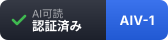

AI可読 認証 AIV-1
AIから中身が読める状態にあることを、機械的に検証する認証です。 審査員はいません。判定は公開されたコードで行われ、誰でも同じ結果を再現できます。 取得も維持も無料で、毎週自動で再検証され、基準を割ると自動的に失効します。
認証の基準
次の3つをすべて満たすことが条件です。
- 主要なAIクローラーを robots.txt で全面的に遮断していないこと
- ページの本文がHTMLに直接含まれていること（JavaScript実行なしで読めること）
- AI可読性スコアが100点満点中80点以上であること
なぜこの3つなのか
1と2は、100点満点の配点でそれぞれ28点と20点を占める項目です。 「そもそもAIがページの中身に到達できるか」を問うもので、ここが欠けていれば他の項目が満点でも意味がありません。 スコアだけを条件にすると、この2つが欠けたまま他の項目で80点に達してしまうため、別の条件として立てています。
配点そのものの根拠は、KDD 2024 で発表された査読論文 GEO: Generative Engine Optimization（プリンストン大学ほか）です。 出典の明記で生成エンジンでの可視性が約40%、統計の追加で約37%向上したという測定結果に基づいて重みを決めています。 robots.txt の解釈は RFC 9309 に準拠しています。
3の80点という数字は、実測した主要24サイトの分布から決めています。 中央値は76点、上位25%の境界は82点でした。80点は「達成できるが、放っておいては通らない」水準にあたります。 基準が緩ければ認証の意味が消え、厳しすぎれば誰も取れません。実測分布に置くことが、唯一の客観的な決め方だと考えています。
認証済みのサイト
| サイト | 初回認証 | 最終確認 |
|---|---|---|
| kakakakakazu.github.io/ai-visible |
ドメイン名順に並べています。成績順ではありません。
バッジ
認証されたサイトは、次のコードを貼ることでバッジを表示できます。使用は無料です。
<a href="https://kakakakakazu.github.io/ai-visible/certified.html"> <img src="https://kakakakakazu.github.io/ai-visible/badge.svg" alt="AI可読 認証 AIV-1" width="168" height="40"> </a>

バッジはこのページへリンクします。訪問者はいつでも、その認証が現在も有効かを確認できます。
よくある質問
なぜ個別のスコアを公開しないのですか
順位をつけることが目的ではないからです。認証は「基準を満たしているか」の二値であって、 何点で満たしたかは第三者には関係ありません。点数を並べれば序列が生まれ、序列は本来の目的 ——AIから読める状態を増やすこと——と関係のない競争を作ります。 自分のスコアは診断ツールでいつでも確認できます。
不合格だったサイトは公開されますか
されません。記録も残しません。この認証は「できていることの証明」であって、 できていないことを指摘するための仕組みではありません。
審査員がいないのに、なぜ信頼できるのですか
逆です。審査員がいないからこそ、判定に人の裁量が入りません。
判定コード（engine.js）は公開されており、誰でも読めて、誰でも同じ入力から同じ結果を再現できます。
信頼の根拠を「誰が認めたか」ではなく「誰でも検証できること」に置いています。
これはセキュリティ評価基準の ISO/IEC 15408（Common Criteria） が
透明性と再現性を信頼の土台に置いているのと同じ考え方です。
一度取れば、ずっと有効ですか
いいえ。毎週自動で再検証します。サイトは変わりますし、AIクローラーの側の事情も変わります。 基準を割った時点で一覧から外れ、バッジのリンク先で無効であることが分かります。
費用はかかりますか
かかりません。判定は自動で、運営に人手も設備も要らないためです。
申請するには
リポジトリの crawl/applicants.json にサイトのURLを追加してください。
次回の巡回で自動的に判定されます。申請はそのサイトの運営者ご本人がおこなってください。
掲載をやめてほしい場合は
ご連絡いただければ、確認のうえ一覧から削除します。 第三者が誤って申請した場合や、掲載を望まれない場合が考えられるためです。 掲載の継続に同意を要求することはありません。
まとめ
- 基準は3つだけ：AIクローラーを遮断していない／本文がHTMLにある／80点以上
- 80点は実測分布から決めた数字（中央値76点、上位25%の境界82点）
- 審査員なし・費用なし・毎週自動で再検証。基準を割れば自動失効
- 個別スコアも不合格サイトも公開しない。順位をつけるための仕組みではない